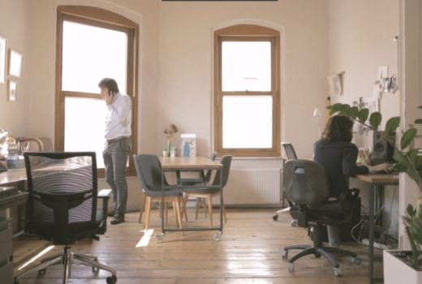
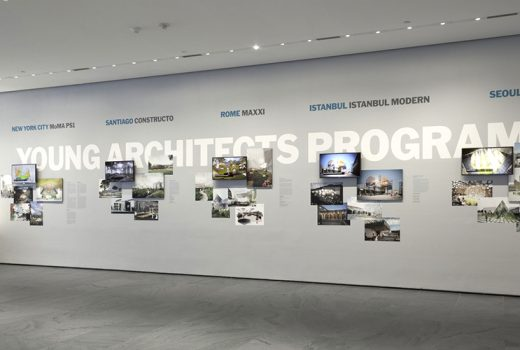

Çatalhöyük Araştırma Projesi Arşivi Yerleştirmesi PATTU tarafından tasarlanan, Refik Anadol’un veri görselleştirmesini yaptığı yerleştirmede Çatalhöyük’te sergilenmektedir.

PATTU’nun röportajı Vbenzeri Blog’da Pattu’nun ‘Katı Olan Her Şey’ projesi hakkındaki röportajı Vbenzeri Blog’da!

‘Katı Olan Her Şey’ MoMA’da sergileniyor! YAP İstanbul Modern 2015’in kazanan projesi olarak seçilen ‘Katı Olan Her Şey’ 26 Haziran –7 Eylül 2015 tarihleri arasında MoMA’da ziyaret edilebilir .